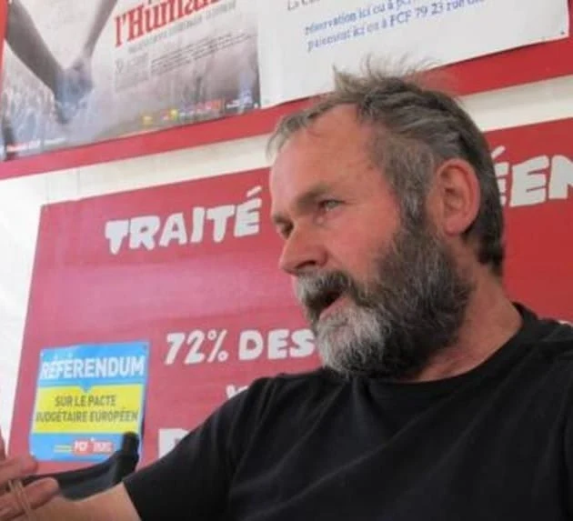

Hommage de la fédération
Jean-Pierre Gelot, notre camarade et ancien secrétaire fédéral
Date indiquée par Facebook · 23 février 2024
Repères éditoriaux
Nous avons appris le décès de notre camarade Jean-Pierre Gelot, militant du PCF, de la CGT et de l’AFPS. La fédération a rendu hommage à un camarade qui a compté dans la vie du PCF des Deux-Sèvres.
Texte conservé avec la publication
C'est avec une très grande tristesse que nous venons d'apprendre le décès brutal à l'âge de 66 ans de notre camarade Jean Pierre Gelot, ancien secrétaire Fédéral du Parti Communiste Français des Deux-Sèvres. Militant depuis toujours au PCF, à la CGT, à l'AFPS, c'est une figure importante et précieuse du PCF des Deux-Sèvres qui disparait.
La crémation se déroulera le mardi 27 février 2024 à 11h00 au Crématorium de Niort (79000).

Sources
Archive rouge · export Facebook · AR-0002-FB-01468
À lire aussi · Niort et Le Vanneau. Les obsèques de notre camarade Jean-Pierre Gelot